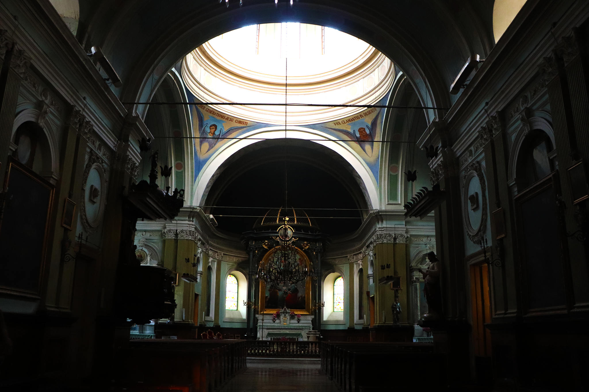
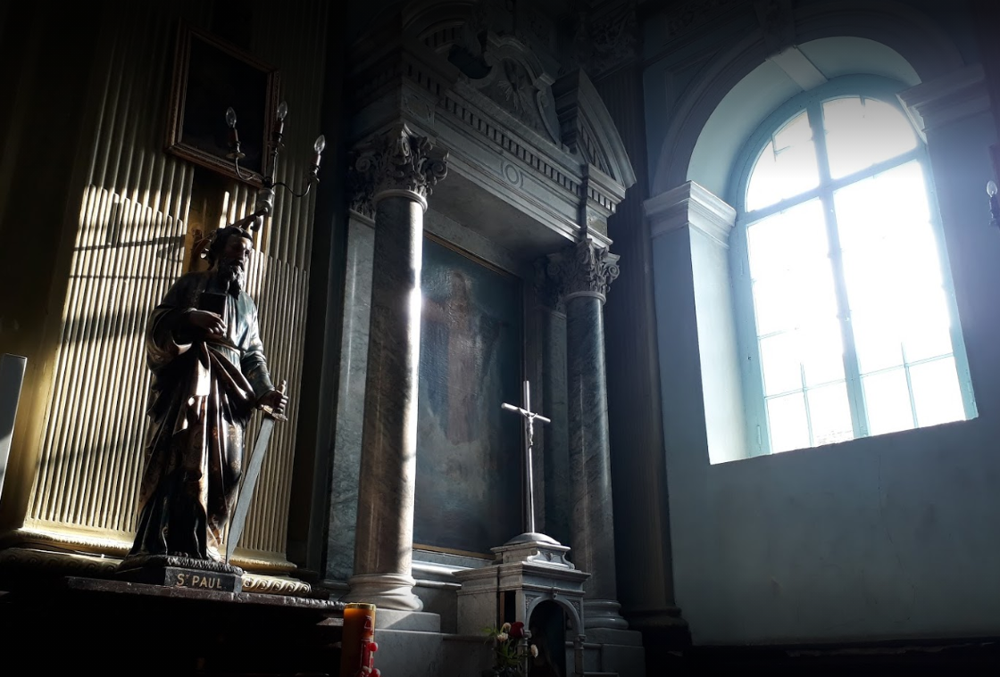

KOSCIOL PW.SW. APOSTOLOW PIOTRA I PAWLA

ეკლესიის მშენებლობა დაიწყო 1870 წელს. არქიტექტორია ალბერტ ზალცმანი. მშენებლობას ხელმძღვანელობდა შტაბს-კაპიტანი ზუბალაშვილი. მას ეწოდებოდა ახალი კათოლიკური ეკლესია, აქვე გაჩნდა ამავე სახელწოდების ქუჩა. ეკლესიის ეზოში შესასვლელის თავზე ქართული წარწერაა (აქვეა რუსული წარწერაც), რომელიც გვამცნობს:

მას ეწოდებოდა ახალი კათოლიკური ეკლესია, აქვე გაჩნდა ამავე სახელწოდების ქუჩა. ეკლესიის ეზოში შესასვლელის თავზე ქართული წარწერაა (აქვეა რუსული წარწერაც), რომელიც გვამცნობს:

„გალავანი ესე აგებულ არს 1891 წელსა. წარსაგებელითა მიხეილ, პავლე, ნიკოლოზ და დედისა მათისა მარიამ ჯიმშეროვებისათა საუკუნო სახსენებლად ქრისტეს მოყვარე შემწირველისა მამისა და მეუღლის ივანე პეტრეს ძე ჯიმშეროვისა.“

